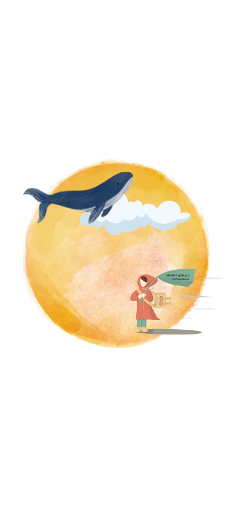

Předpověď počasí
Dnes
{{dnesniDen | date: "EEE dd MMM YYYY" : 'cs'}}
{{(teplota?.temp - 273.15).toFixed(0)}}
°C
{{mesto}}
Pocitová teplota
{{(teplota?.feels_like -271.15).toFixed(0)}}
Maximální teplota
{{(teplota?.temp_max -271.15).toFixed(0)}}
Minimální teplota
{{(teplota?.temp_min -271.15).toFixed(0)}}
